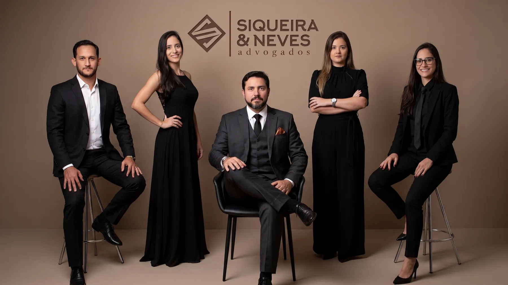

Um mundo mais justo, caso a caso.
Escritório com atuação completa e 10 anos de estrada: Família, Trabalhista, Previdenciário, Empresarial e indenizações Samarco/Rio Doce. À frente, os sócios Elias Siqueira Jr. e Mardson Neves.
Onde o Siqueira & Neves atua por você
Achou o seu caso na lista? Toca nele e a conversa já começa no WhatsApp, com o assunto certo.
- Família e InventárioDivórcio · Guarda · Pensão Os momentos mais delicados conduzidos com cuidado, do acordo ao inventário. Falar sobre isso no WhatsApp →
- TrabalhistaCLT · Rescisão · Verbas Defesa de direitos trabalhistas, para empregado ou empregador. Falar sobre isso no WhatsApp →
- PrevidenciárioINSS · Aposentadoria Aposentadoria, revisão e benefícios junto ao INSS. Falar sobre isso no WhatsApp →
- Empresarial e SocietárioContratos · Auditoria Assessoria preventiva e estratégica para empresários e sociedades. Falar sobre isso no WhatsApp →
- ConsumidorCobrança indevida Produto com defeito, cobrança indevida e relações de consumo em geral. Falar sobre isso no WhatsApp →
- Saúde e Direito MédicoPlanos de saúde Questões com planos de saúde e responsabilidade médica. Falar sobre isso no WhatsApp →
- ImobiliárioCompra · Regularização Compra, venda, regularização e disputas envolvendo imóveis. Falar sobre isso no WhatsApp →
- Recuperação de CréditoCobrança de dívidas Cobrança de valores devidos, na justiça ou por acordo. Falar sobre isso no WhatsApp →
- BancárioRevisão de contratos Revisão de contratos e questões com bancos e financeiras. Falar sobre isso no WhatsApp →
- TrânsitoCNH · Multas Suspensão de CNH, multas e infrações de trânsito. Falar sobre isso no WhatsApp →
- AdministrativoServidor público Questões envolvendo servidores públicos e a administração pública. Falar sobre isso no WhatsApp →
- Indenizações Samarco / Rio DoceAtingidos · Indenização Atuação especializada junto aos atingidos do desastre do Rio Doce (detalhes abaixo). Falar sobre isso no WhatsApp →
O Rio Doce passa por aqui. A reparação também.
Rio Doce — Governador Valadares, MG
Atuamos junto a famílias e trabalhadores da região atingidos pelo desastre de Mariana, orientando sobre o direito à indenização e acompanhando cada etapa, do cadastro no programa ao recebimento.
Falar sobre meu casoDois sócios fundadores. Uma banca inteira por trás.
Elias Siqueira Jr.
À frente da direção e da estratégia jurídica do escritório. "Protejo seus direitos" é o lema que ele carrega.
Mardson Neves
Condução próxima de cada cliente e cada caso, do primeiro atendimento até o fim do processo.
- Atendimento personalizado. Proximidade com o cliente, respeitando as peculiaridades de cada caso.
- Digital ou presencial. Sede física em Governador Valadares, e atendimento inteiro pelo celular se você preferir.
- Equipe especializada. Advogados com anos de atuação nas mais diversas áreas do direito.
O que dizem no Google
Nota 5,0 em avaliações reais de clientes
"Um escritório de profissionais que tratam clientes com seriedade e compromisso, e buscam solucionar os processos de maneira assertiva e competente."
"Excelentes advogados. Profissionais pontuais com os seus prazos, valor justo, e excelente atendimento começando pela recepção. Indico a todos."
Precisa resolver algo com a Justiça?
Fale agora com o Siqueira & Neves e entenda, sem compromisso, qual é o melhor caminho para o seu caso. Se preferir ligar: (33) 3022-4128.
Falar no WhatsApp